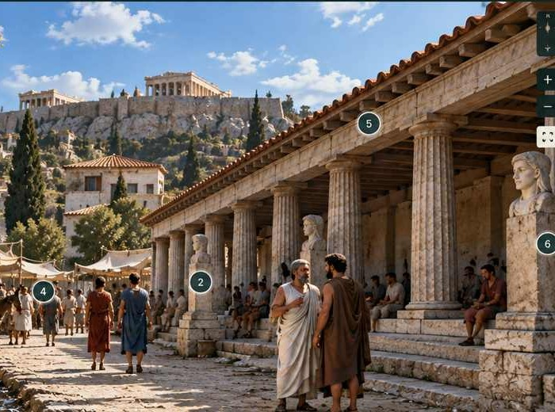

Experimental preview · does not alter Version 7
Interactive reconstruction
Explore the dramatic environment as a layered evidence-space. The image remains a reconstruction; the interactive layer distinguishes what is explicit, materially attested, spatially reconstructed and interpretative.
Viewpoint
Interpretive mode

Stoa Basileios · encounter vicinityc. 399 BCE reconstruction · exact standing point unknown
AttestedReconstructedPossibleInterpretative
What this experiment is testing
The reconstruction as an analytical instrument.
The visitor is not being asked merely to click an attractive picture. Each visual feature connects to a distinct evidence category. The same feature IDs could later connect this reconstruction to the GIS map and Evidence Catalogue, allowing one evidence model to drive all three views.
What disappears when the situated environment is reduced to surviving text?